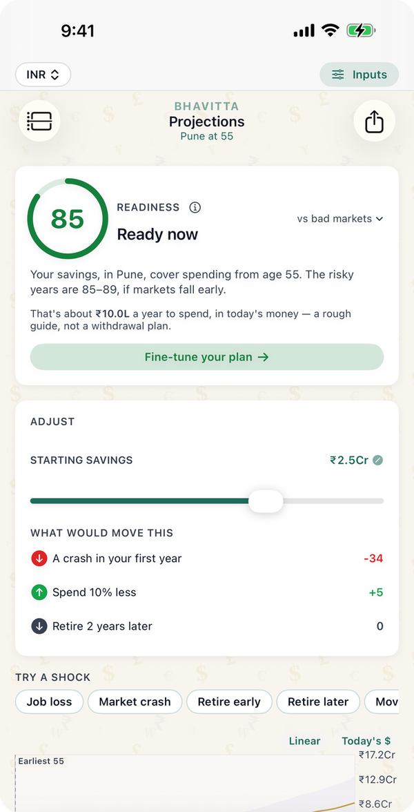
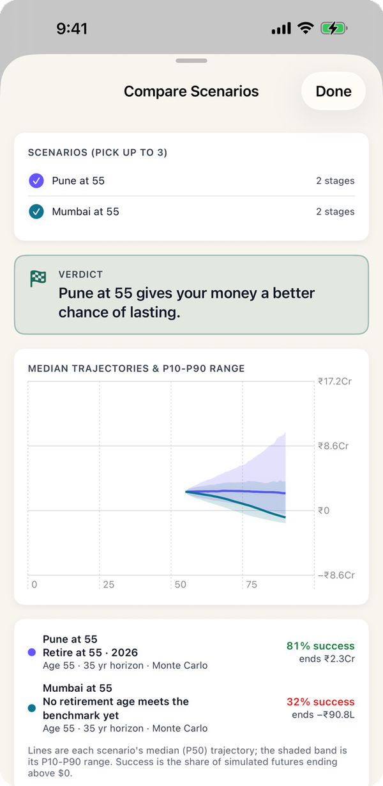

"How much do I need to retire?" usually gets answered with "25 times your expenses", a rule worked out on US market returns and US inflation. In India both are different: prices rise about 5% a year, health premiums faster, and a retirement at 50 has to last 40 years. The tables below come from Bhavitta's own engine, the same one the app runs, for a couple in each of the seven Indian cities the app has resident cost estimates for. Each figure is the smallest corpus, to the nearest ₹5 lakh, that survives to 90 in at least 80% (or 90%) of 10,000 simulated market paths.
How much corpus do you need to retire at 55, 50 or 45?
Corpus at the day you stop working, in today's rupees, for an 80% chance it lasts to 90. That 80% is the bar the app uses for "ready".
| City | Spending in year one | Retire at 55 | Retire at 50 | Retire at 45 |
|---|---|---|---|---|
| Mumbai | ₹13.3L | ₹3.95 Cr | ₹4.35 Cr | ₹4.70 Cr |
| Bangalore | ₹10.1L | ₹3.05 Cr | ₹3.35 Cr | ₹3.60 Cr |
| Delhi | ₹9.4L | ₹2.70 Cr | ₹2.90 Cr | ₹3.15 Cr |
| Goa | ₹9.4L | ₹2.65 Cr | ₹2.90 Cr | ₹3.15 Cr |
| Hyderabad | ₹8.8L | ₹2.70 Cr | ₹2.95 Cr | ₹3.20 Cr |
| Pune | ₹8.1L | ₹2.50 Cr | ₹2.75 Cr | ₹2.95 Cr |
| Chennai | ₹8.1L | ₹2.45 Cr | ₹2.70 Cr | ₹2.95 Cr |
Spending in year one is the app's resident cost of living for a couple in that city plus a ₹40,000 health-insurance premium. Delhi and Goa need a little less than their spending suggests because their prices rise 4.5% a year, not 5%.

What if you want a 90% chance?
The same households, held to a stricter bar: the money lasts to 90 in nine of every ten market paths.
| City | Retire at 55 | Retire at 50 | Retire at 45 |
|---|---|---|---|
| Mumbai | ₹4.75 Cr | ₹5.25 Cr | ₹5.65 Cr |
| Bangalore | ₹3.60 Cr | ₹4.05 Cr | ₹4.35 Cr |
| Delhi | ₹3.15 Cr | ₹3.50 Cr | ₹3.80 Cr |
| Goa | ₹3.20 Cr | ₹3.50 Cr | ₹3.75 Cr |
| Hyderabad | ₹3.15 Cr | ₹3.55 Cr | ₹3.90 Cr |
| Pune | ₹2.95 Cr | ₹3.30 Cr | ₹3.60 Cr |
| Chennai | ₹2.95 Cr | ₹3.30 Cr | ₹3.60 Cr |
Going from 80% to 90% costs roughly another 20% of corpus everywhere. Which bar to use is a judgement about how much a bad decade would hurt and how easily you could cut spending or earn again.
Is the 4% rule safe in India?
Not for an early retirement on these assumptions. Dividing the first year's spending by the corpus in the 80% table gives the withdrawal rate each plan can afford:
| Retire at | 80% chance | 90% chance | Corpus as a multiple of spending (80%) |
|---|---|---|---|
| 55 | 3.3–3.6% | 2.8–3.0% | 28–31× |
| 50 | 3.0–3.3% | 2.5–2.7% | 31–34× |
| 45 | 2.7–3.0% | 2.3–2.5% | 33–36× |
Three things push the Indian figure below 4%. The gap between returns and inflation is narrower: the app's Balanced India preset averages 9.5% a year against 5% inflation, with 13% volatility. Health insurance grows at 10% a year, so it is a small cost at 55 and a large one at 85. And the horizon is long: 35 years from 55, 45 years from 45. The often-quoted "25× expenses" is the 4% rule in another form; on these numbers it falls well short.
What the numbers assume
- A couple, already retired. The corpus is what they hold the day earned income stops. No salary, rent income, pension or annuity after that.
- Resident cost of living from the app's estimates for a comfortable couple, including rent: ₹12.9 lakh a year in Mumbai, ₹9.7 lakh in Bangalore, ₹9 lakh in Delhi and Goa, ₹8.4 lakh in Hyderabad, ₹7.7 lakh in Pune and Chennai (today's money). Each city inflates at its own rate from state CPI-Urban data.
- Health insurance at ₹40,000 a year today, rising 10% a year.
- Returns from the app's Balanced India Monte Carlo preset: 9.5% a year on average, 13% volatility, all in rupees. 10,000 trials per figure, each a different sequence of yearly returns.
- Survival means the balance stays above zero in every year to 90, not just at the end.
- EPF, PPF and NPS are inside the corpus. The table treats all savings as one pool you can draw from. If part of it is still locked (see below), you need more outside it.
- No tax in retirement. Tax on capital gains and interest is not modelled here. Add a tax rate to the retirement stage in the app if your withdrawals will be taxed.
What changes the answer most
- Where you live. Mumbai needs about 60% more than Pune or Chennai for the same life, more than the difference between retiring at 45 and at 55. The Mumbai vs Pune worked example follows one couple through that choice with EPF, PPF, NPS and an EPS pension.
- Owning your home. The resident estimates include rent. A paid-off home takes a large share out of yearly spending, and the corpus falls roughly in proportion.
- A pension. Even a fixed EPS pension of about ₹1 lakh a year from 58 reduces what the corpus has to cover, though it buys less every year.
- Money you cannot touch yet. EPF pays out at 58, PPF matures after 15 years and NPS mostly at 60. Retire at 50 and the years until then come from the liquid part of your savings alone.
- Dollar savings. An NRI retiring to India with a US portfolio faces rupee depreciation as well as returns; see how much you need to move back from the US and Bangalore at 50 vs Seattle.

If you know your monthly spending rather than your city, Is ₹3 crore enough? gives the chance for ₹75,000 to ₹2 lakh a month at each retirement age.
Common questions
Is ₹2 crore enough to retire in India?
Not for a couple at these resident cost estimates. Even at 55, the smallest corpus that reaches an 80% chance is ₹2.45 crore (Chennai). ₹2 crore can work with lower spending than the estimates here, for example in a home you own, in a smaller city, or alongside a pension.
Is ₹3 crore enough to retire in India?
At 55, yes in Pune, Chennai, Goa, Delhi and Hyderabad, where ₹2.45–2.70 crore reaches an 80% chance. Not in Bangalore (₹3.05 crore) or Mumbai (₹3.95 crore). At 45, ₹3 crore is enough only in Pune and Chennai.
Is ₹5 crore enough to retire in India?
Yes, in every one of the seven cities at 45, 50 or 55 for an 80% chance; the highest figure is ₹4.70 crore for Mumbai at 45. For a 90% chance, Mumbai needs ₹5.25 crore at 50 and ₹5.65 crore at 45.
How much do you need to retire in Mumbai?
About ₹3.95 crore at 55, ₹4.35 crore at 50 and ₹4.70 crore at 45, in today's money, for a couple spending ₹13.3 lakh a year including health insurance, with an 80% chance the money lasts to 90.
Should EPF, PPF and NPS count toward the retirement corpus?
Yes, but not as cash on day one. These tables count them inside the corpus. If you retire before 58 or 60, your liquid savings alone have to carry you until EPF and NPS pay out. The app models each scheme as its own account with its own payout age, so it shows that dip.
What is a safe withdrawal rate in India?
On these assumptions, about 3.3–3.6% of the corpus in the first year for an 80% chance when retiring at 55, and 2.7–3.0% when retiring at 45. For a 90% chance it is 2.8–3.0% at 55 and 2.3–2.5% at 45. The amount then rises with inflation each year.
Run your own number
- Set the currency to INR at the top of the app. New plans start with Indian defaults: resident cost of living, city inflation and the Balanced India return preset.
- On the Start tab, enter your age, savings, income and city.
- Add EPF, PPF, NPS, Health insurance and any pension from "Add a life event" on My Plan.
- The Projections tab shows your chance of lasting to 90 and the earliest age you could stop working at 80%.
Find your own number
Free on iPhone and Android. No account; your plan never leaves your phone.